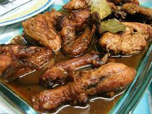

Adobo Recipe

Adobo is one of Philippines' most famous dishes! It is the combination of soy sauce and vinegar that always leave your mouth wanting more in every bite. I will give you the recipe and ingredients needed in order to make your very own Adobo!
Ingredients
- 6 Cloves garlic, crushed
- 1 pc onion, sliced
- 1 Kg chicken cut ups
- 2 tbsp vinegar
- 1/4 cup soy sauce
- 1 cup water
- 2 pcs bay leaves
- 2 tbsp canola oil
Steps
- Heat oil in pan and sauté garlic and onions. Then add chicken to the pan and sear on all sides, until you have a little browning in the chicken skin
- Pour in vinegar, soy sauce and water. Add bay leaves, pepper and Knorr Chicken Cubes. Bring to a boil over high heat then reduce heat to simmer, but do not cover the pan. Continue to simmer for 10 mins
- Remove chicken pieces from sauce and fry in another pan until nicely browned
- Put back fried chicken pieces into sauce. Add sugar and let simmer again for another 10 minutes or until sauce has thickened. Serve warm
Back to Homepage